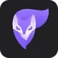
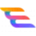

МолекулаАгрегаторы нейросетей
Молекула объединяет модели для текстов, изображений, видео и музыки. В одном аккаунте можно подобрать инструмент под этап работы, сохранить инструкции проекта и использовать готовые роли.
К задаче в МолекулеОбработка фото: Сформулируйте, что нужно изменить и что сохранить. Проверьте лица, надписи и края объектов после обработки.
Отредактируйте снимок для личной страницы, задав небольшой набор конкретных изменений. Укажите, что нужно убрать и что сохранить; сравните результат с оригиналом по контуру лица, фактуре одежды и предметам вокруг, прежде чем публиковать.
Отредактируй мой снимок у окна: убери случайный пакет на полу, сделай свет немного мягче. Сохрани черты лица, рисунок рубашки, положение рук и предметы на подоконнике.

Молекула объединяет модели для текстов, изображений, видео и музыки. В одном аккаунте можно подобрать инструмент под этап работы, сохранить инструкции проекта и использовать готовые роли.
К задаче в Молекуле
Collov AI рассчитан на задачи, где нужно менять фотографии с учётом выбранного оформления. Ещё одно направление работы: работать с информацией о недвижимости.

Hypotenuse AI помогает компаниям подготавливать письменный контент и изображения. Материалы предназначены для сайтов и рекламы, а их содержание можно настраивать под нужную задачу. Продукт объединяет написание текста с визуальной подготовкой при работе над деловыми публикациями организации.
Photoshop AI позволяет ретушировать изображения и менять фон по словесному заданию. Пользователь описывает нужную правку для существующего снимка.
Resticker используют для задачи: менять фотографии с учётом выбранного оформления. Ещё одно направление работы: получать изображения из словесного задания.

Simplai рассчитан на задачи, где нужно собирать видеосцену по описанию или визуальному исходнику. Ещё одно направление работы: менять фотографии с учётом выбранного оформления.
Ulike применяет ИИ-ретушь к селфи в приложении-камере. Готовые визуальные образы позволяют изменить оформление портрета ещё на этапе съёмки.
VanceAI рассчитан на задачи, где нужно менять фотографии с учётом выбранного оформления.

VisualGPT рассчитан на задачи, где нужно собирать видеосцену по описанию или визуальному исходнику. Ещё одно направление работы: менять фотографии с учётом выбранного оформления.

ПикБлум AI используют для задачи: менять фотографии с учётом выбранного оформления. Ещё одно направление работы: получать изображения из словесного задания.

Adobe Firefly объединяет генерацию и редактирование изображений, видео и других творческих материалов. Подходит для поиска визуального направления и дальнейшей доработки в редакторе.

Claid AI от Let’s Enhance обрабатывает фотографии товаров для электронной коммерции. Сервис удаляет или создаёт фон, увеличивает изображение и предлагает ретушь с цветокоррекцией. Доступны веб-приложение и API, чтобы связывать визуальную обработку снимков с рабочими системами магазина.
Clipdrop Relight меняет освещение на готовом изображении. Позволяет добавлять источники света и настраивать их направление и цвет.
Generated Photos используют, чтобы менять фотографии с учётом выбранного оформления. Ещё одно направление работы: получать изображения из словесного задания.
Inpaint убирает нежелательные предметы и повреждения с фотографии. Настольная версия позволяет выполнять ретушь без подключения к внешнему онлайн-редактору.
Pebblely создаёт окружающую сцену для изображения товара. Предмет можно представить на подиуме, в помещении или на природном фоне.

Picsart используют, чтобы собирать видеосцену по описанию или визуальному исходнику. Ещё одно направление работы: менять фотографии с учётом выбранного оформления.
Revery AI добавляет виртуальную примерку на сайт магазина. Одежду можно показывать на модели выбранного типажа для представления товара покупателю.

SellerPic относится к инструментам, которые помогают менять фотографии с учётом выбранного оформления. Ещё одно направление работы: готовить материалы о товарах и услугах.

Artbreeder строит визуальную работу вокруг смешивания и изменения изображений. Он пригодится для поиска внешности персонажа или серии вариантов одного образа.

ArtSpace используют для задачи: менять фотографии с учётом выбранного оформления. Ещё одно направление работы: получать изображения из словесного задания.
Dzine рассчитан на задачи, где нужно получать изображения из словесного задания. Ещё одно направление работы: менять фотографии с учётом выбранного оформления.

Gencraft используют, чтобы получать изображения из словесного задания. Ещё одно направление работы: менять фотографии с учётом выбранного оформления.
IOPaint удаляет выделенный предмет с фотографии и восстанавливает изображение на его месте. Обработку выбранной области можно выполнять на собственном компьютере.

В инструменте «Photoleap» можно менять фотографии с учётом выбранного оформления. Ещё одно направление работы: получать изображения из словесного задания.
RetouchMe — приложение для заказа ретуши фотографий. Пользователь отправляет снимок и выбирает нужные изменения, а обработкой занимаются дизайнеры, работающие с Photoshop. Среди задач представлены правки фона, цвета и портрета. Перед заказом определите детали, которые нужно сохранить, и проверьте полученный результат по исходнику.

В инструменте «AI Ease» можно собирать видеосцену по описанию или визуальному исходнику. Ещё одно направление работы: менять фотографии с учётом выбранного оформления.
B612 объединяет функции камеры и портретной обработки. В приложении доступны фильтры, маски, ретушь и создание ИИ-портретов для социальных сетей.

Black Forest Labs разрабатывает модели FLUX для визуальной генерации. Для практической работы нужно выбрать подходящую модель и способ её использования.
Krita AI Diffusion добавляет генерацию изображений в редактор Krita. Пользователь работает с результатом на холсте и может править отдельные области со слоями.

neural.love рассчитан на задачи, где нужно получать изображения из словесного задания. Ещё одно направление работы: менять фотографии с учётом выбранного оформления.
Photo AI создаёт изображения человека на основе его фотографий. Пользователь может получить варианты с другой сценой и образом без новой фотосъёмки.

Secta Labs относится к инструментам, которые помогают подготавливать изображения человека или персонажа. Ещё одно направление работы: менять фотографии с учётом выбранного оформления.

Vectorizer.AI используют, чтобы получать изображения из словесного задания. Ещё одно направление работы: менять фотографии с учётом выбранного оформления.

Artguru используют, чтобы собирать видеосцену по описанию или визуальному исходнику. Ещё одно направление работы: менять фотографии с учётом выбранного оформления.
Corel PaintShop Pro совмещает графическое редактирование со слоями и инструментами ИИ. Предусмотрены ретушь, улучшение снимка и увеличение готового изображения.

Erase.bg используют для задачи: собирать видеосцену по описанию или визуальному исходнику. Ещё одно направление работы: менять фотографии с учётом выбранного оформления.

Hotpot.ai объединяет графические инструменты и подготовку контента с участием ИИ. Среди возможностей есть удаление фона и восстановление снимков, а также шаблоны макетов. Создание публикаций для соцсетей и доступ через API дополняют работу над визуальными материалами пользователя.

В инструменте «Phot.AI» можно менять фотографии с учётом выбранного оформления. Ещё одно направление работы: готовить материалы о товарах и услугах.

PicWish используют, чтобы менять фотографии с учётом выбранного оформления. Ещё одно направление работы: создавать и уточнять визуальный макет.
Cleanup.pictures удаляет выбранные кистью объекты из изображения и восстанавливает фон. Помогает очистить исходный снимок от лишних деталей.
Facetune помогает ретушировать портреты и изменять внешность на фотографии. Приложение также предлагает фильтры и инструменты работы с ИИ-аватарами.
InstaHeadshots относится к инструментам, которые помогают подготавливать изображения человека или персонажа. Ещё одно направление работы: менять фотографии с учётом выбранного оформления.
Kolors предназначена для генерации фотографически оформленных изображений и виртуальной демонстрации одежды. Модель позволяет подготовить визуальный вариант примерки выбранного образа.

Magnific AI используют для задачи: получать изображения из словесного задания. Ещё одно направление работы: менять фотографии с учётом выбранного оформления.
Meitu обрабатывает портреты в мобильном приложении: выполняет ретушь, меняет художественное оформление снимка и создаёт аватары с использованием ИИ.
Remaker AI переносит лицо на фотографию либо в видеозапись. Пользователь может выполнить такую обработку исходного визуального материала через онлайн-интерфейс.
RunDiffusion предоставляет облачное рабочее пространство со Stable Diffusion. Интерфейсы WebUI и ComfyUI открываются в браузере, без собственной видеокарты пользователя.
Страница 1 из 2
Если снимок рабочего стола нужен для сайта мастерской, сначала выпишите детали, которые должны остаться: инструмент, положение рук и поверхность. Отдельно отметьте то, что можно убрать или заменить. Такая граница помогает оценить правку по задаче, а не по общему впечатлению.
Сохраните неизменённую копию фотографии. Для пробы выберите небольшой участок, где видны края предмета и направление света. Если результат требует восстановления других деталей, вернитесь к исходнику и уточните выделение, прежде чем обрабатывать весь набор.
Adobe Firefly предлагает генеративное заполнение и расширение изображения. Такой подход полезен, когда для баннера требуется больше пространства вокруг сцены. После правки сравните линию поверхности, тени и стык новой области с исходной фотографией.
Recraft включает инструменты редактирования фотографии и удаления фона. Его можно проверить на задаче отделения предмета для дальнейшего макета. Посмотрите на тонкие границы и прозрачные детали: именно они требуют внимательной оценки после обработки.
Сравнение зависит от последующей работы. Для расширенного кадра важна согласованность окружения, для выделенного объекта сохранение формы и аккуратный край. Не считайте одну удачную пробу подтверждением одинакового результата на всех фотографиях с другим освещением.
Откройте результат на светлом и тёмном фоне, затем уменьшите до размера блока сайта. Светлый ореол или потерянный край может быть незаметен в редакторе. Для реального товара сопоставьте цвет и геометрию с оригиналом, чтобы обработка не изменила представление о продукте.
Уточните разрешение на загрузку клиентских фотографий и правила хранения материалов. После экспорта проверьте размеры и прозрачность файла вне рабочего интерфейса. Для рекламной сцены продолжение процесса описано в категории фотографий товаров; сохраняйте исходный предмет неизменным там, где нужна точность.